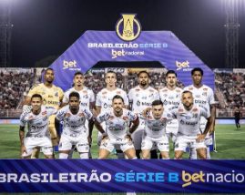
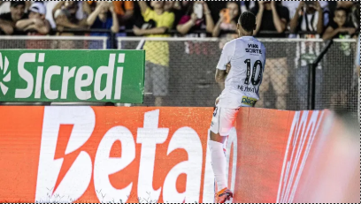
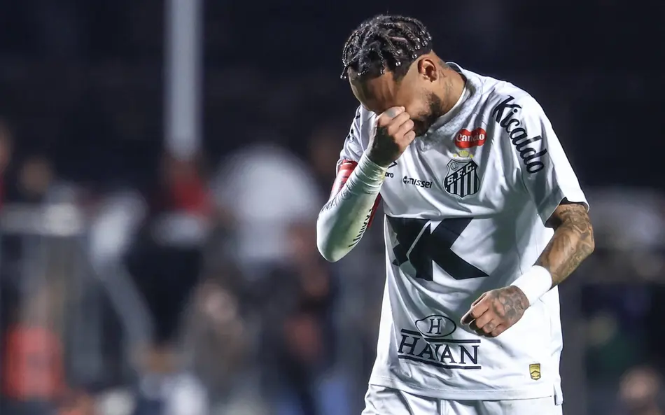
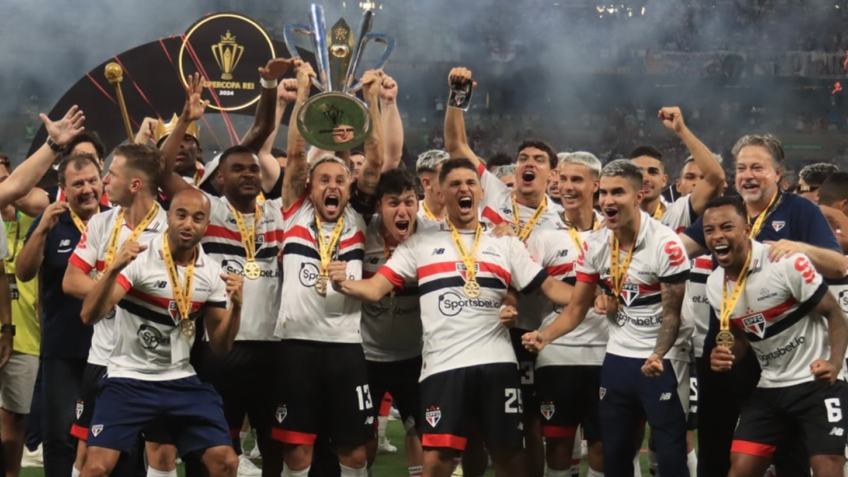
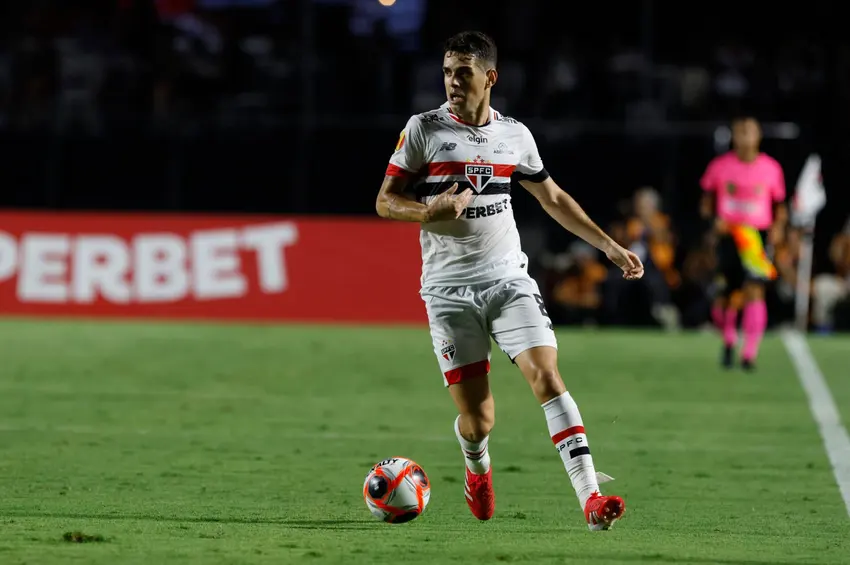
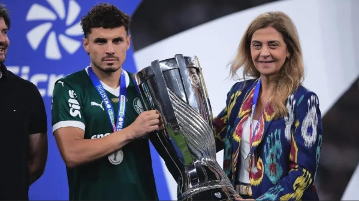
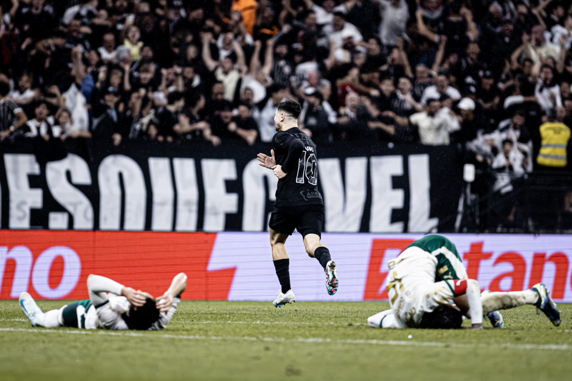
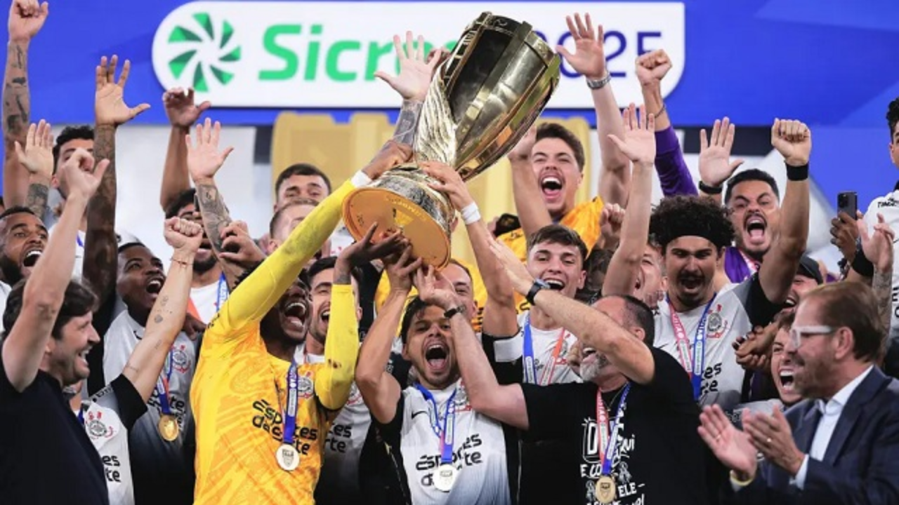
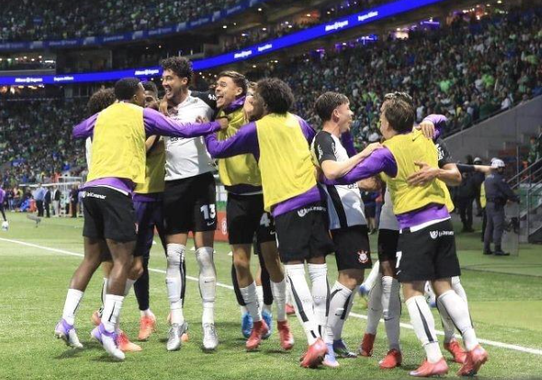
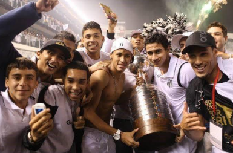

Santos FC
O Santos viveu um momento delicado em 2024. Após ser rebaixado pela primeira vez em sua história, em 2023, o clube disputou a Série B e conseguiu o acesso, mas não sem turbulências. Foi vice-campeão paulista, conquistou o título da segunda divisão do Brasileirão, porém sob vaias da torcida durante a cerimônia. A virada do ano trouxe esperança com retornos importantes.

Foto: Raul Baretta/ Santos FC
O maior deles foi Neymar Jr., ídolo e craque da seleção brasileira, que voltou à Vila Belmiro após 13 anos para vestir novamente a camisa do Santos, e dessa vez, usando a lendária camisa 10 de Pelé. Além dele, chegaram reforços de peso como Zé Ivaldo, Zé Rafael, Benjamín Rollheiser e Mayke. Por outro lado, o clube perdeu nomes marcantes: Gil (que havia adiado a aposentadoria para ajudar o time), o goleiro João Paulo, Soteldo, Gabriel Veron e João Schmidt.

Direitos de imagem: Santos Futebol Clube
O início da temporada mostrou evolução quando Neymar estava em campo. Sem ele, porém, o time se tornava previsível e sofria na criação de jogadas. Essa dependência ficou clara no Paulistão: o Santos foi eliminado na semifinal pelo Corinthians, por 2 a 1, sem contar com seu capitão.
No Brasileirão, os mesmos problemas reapareceram. O time deixou pontos importantes pelo caminho e acumulou derrotas dolorosas, como para o Vasco (2 a 1, na estreia), Fluminense (1 a 0, com gol no fim), Corinthians (1 a 0, com jogador expulso) e Botafogo (2 a 0, após expulsão de Neymar). Para piorar, foi eliminado pelo CRB na terceira fase da Copa do Brasil, nos pênaltis (5 a 4).
Depois da Copa do Mundo, o Santos teve alguns respiros, mas pouca consistência. O melhor momento veio na vitória sobre o Flamengo, por 1 a 0 no Maracanã, com gol de Neymar — o grande destaque até então. Em seguida, vieram altos e baixos: derrotas para Mirassol (3 a 0) e Internacional (2 a 1), empate suado com o Sport (2 a 2), além de duas vitórias importantes sobre Juventude (3 a 1, no MorumBIS) e Cruzeiro (2 a 1, de virada).
Mas o cenário desandou de vez no dia 17: em plena capital paulista, o Vasco goleou o Santos por 6 a 0 no MorumBIS, no pior resultado do clube no ano. A goleada custou o cargo do técnico Cleber Xavier. No domingo seguinte (24), com um interino no comando e sem Neymar — suspenso por cartões —, o time perdeu para o Bahia por 2 a 0, afundando ainda mais na tabela.

Situação atual: o Santos ocupa o 15º lugar, dois pontos acima do Z-4. A direção anunciou a chegada de um novo técnico para organizar o time e potencializar Neymar.
O desafio é enorme: o clube da Vila Belmiro luta novamente para se manter na elite do futebol brasileiro. A esperança é que, com o craque em campo e um novo comando técnico, o Santos consiga afastar o fantasma da queda e reencontrar dias melhores.
São Paulo FC

O São Paulo encerrou 2024 sem disputar títulos relevantes, conquistando apenas a Supercopa do Brasil contra o Palmeiras nos pênaltis. Para 2025, a meta era clara: ter um desempenho melhor e voltar a brigar por conquistas expressivas. O retorno de Oscar, revelado no clube e de volta após 15 anos, foi o grande reforço, somando-se a Lucas Moura, Calleri, Bobadilla, Ferreirinha, Luciano e outros nomes.
Paulistão e início de ano turbulento
O começo, porém, foi irregular. Apesar de terminar em primeiro no grupo do Paulistão, o time apresentou atuações fracas na reta final da fase de grupos. No mata-mata, venceu o Novorizontino nas oitavas em meio a polêmicas de arbitragem, mas caiu na semifinal diante do Palmeiras: derrota por 1 a 0, com pênalti polêmico convertido por Raphael Veiga, em partida que marcou a estreia de Vitor Roque.

No Brasileirão, o início também foi frustrante: nos primeiros oito jogos, o São Paulo empatou seis, perdeu um e venceu apenas uma vez — 2 a 1 contra o Santos no MorumBIS. A situação contrastava com a Libertadores, onde o time “voava”, liderando seu grupo de forma isolada. A diferença de desempenho dividiu a diretoria: manter ou demitir Luis Zubeldía? A decisão foi pela continuidade, mas após a derrota para o Vasco por 3 a 1, no MorumBIS, o próprio treinador pediu demissão, deixando o cargo com respeito.
Era Crespo: reação e esperança
Hernán Crespo assumiu o comando e mudou os ares no Morumbi. O São Paulo pulou do 14º para o 7º lugar no Brasileirão, embalando oito jogos de invencibilidade (seis vitórias e dois empates), sendo cinco triunfos consecutivos. Na Copa do Brasil, contudo, a campanha terminou cedo: eliminação nas oitavas para o Athletico-PR nos pênaltis, após empate agregado em 2 a 2 e uma expulsão polêmica que comprometeu o jogo de volta. Na Libertadores, a história foi diferente. No dia 19, o Tricolor eliminou o Atlético Nacional nos pênaltis após empate no tempo normal. Com Rafael brilhando no gol, o São Paulo venceu por 4 a 3 nas cobranças e garantiu vaga nas quartas de final.
Situação atual: A equipe melhorou bastante em relação ao início da temporada, mas ainda sofre com lesões de peças-chave como Lucas, Calleri e Oscar. Sem eles, Luciano, Rafael e Ferreirinha têm assumido o protagonismo, ao lado de jovens da base. A torcida sabe que há espaço para evolução, mas enxerga sinais de recuperação — principalmente com a volta gradual dos principais jogadores.

S.E. Palmeiras

O Palmeiras de Abel Ferreira entrou em 2025 sob enorme pressão. A temporada foi frustrante: perdeu a final da Supercopa do Brasil para o São Paulo nos pênaltis, caiu nas oitavas da Copa do Brasil para o Flamengo, foi eliminado também nas oitavas da Libertadores pelo Botafogo e terminou como vice-campeão do Brasileirão.
Reformulação e grandes mudanças
O ano começou com profundas alterações no elenco. Dudu se transferiu para o Cruzeiro, e ídolos como Zé Rafael, Rony, Marcos Rocha e Mayke deixaram o clube. A maior perda, entretanto, foi Estevão: joia da base e melhor jogador do time em 2024, negociado com o Chelsea para jogar a Premier League. Para equilibrar a saída de peças importantes, a diretoria investiu pesado. Chegaram Facundo Torres, Micael, Bruno Fuchs, Emiliano Martínez, Paulinho e, principalmente, Vitor Roque — contratado junto ao Barcelona na negociação mais cara da história do clube.
Paulistão e início de temporada

A caminhada começou turbulenta no Paulistão. O Verdão quase foi eliminado ainda na fase de grupos, mas conseguiu a classificação nos minutos finais. Nas semifinais, eliminou o São Paulo por 1 a 0 e chegou à decisão contra o Corinthians. Porém, perdeu o título…
Mundial de Clubes: sonho interrompido
Depois de meio ano de preparação, o Verdão estreou empatando em 0 a 0 contra o Porto…

A nova dupla e o futuro

Desde então, Abel Ferreira encontrou soluções no ataque…
SC Corinthians Paulista

O Corinthians vive, atualmente, a fase mais turbulenta fora de campo entre os quatro grandes…

Na pré-Libertadores, o time passou sufoco…

Se dentro de campo oscilam esperança e frustração, fora dele o cenário é ainda pior…
Entre altos e baixos, São Paulo segue sendo o epicentro do futebol brasileiro…
